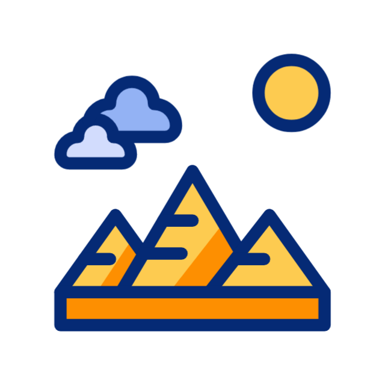
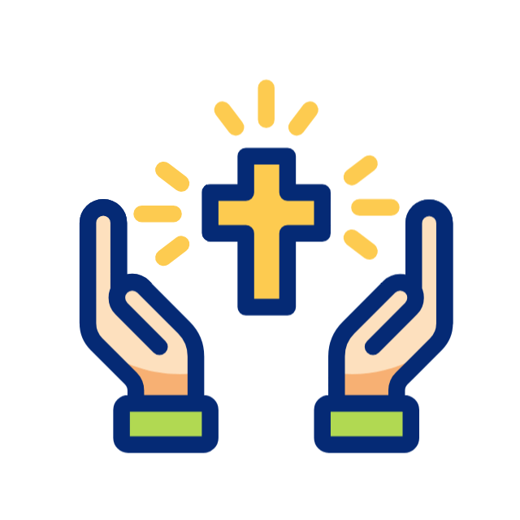

منذ آلاف السنين، كتبت مصر أول فصول الحضارة الإنسانية. هنا نعيد اكتشاف تراثنا العظيم ونحافظ عليه لأجيال المستقبل.

من الأهرامات إلى المعابد، حكاية ملوك مصر القدماء.
عمارة مملوكية ومساجد تزين قلب القاهرة بروح التاريخ.

كنائس وأيقونات تحافظ على الهوية الروحية لمصر.
موسيقى وأكلات وملابس تحكي نبض الشارع المصري.
اكتشف كيف يمكننا جميعًا المساهمة في حماية تراث مصر العظيم باستخدام التكنولوجيا والتوعية والتعليم.